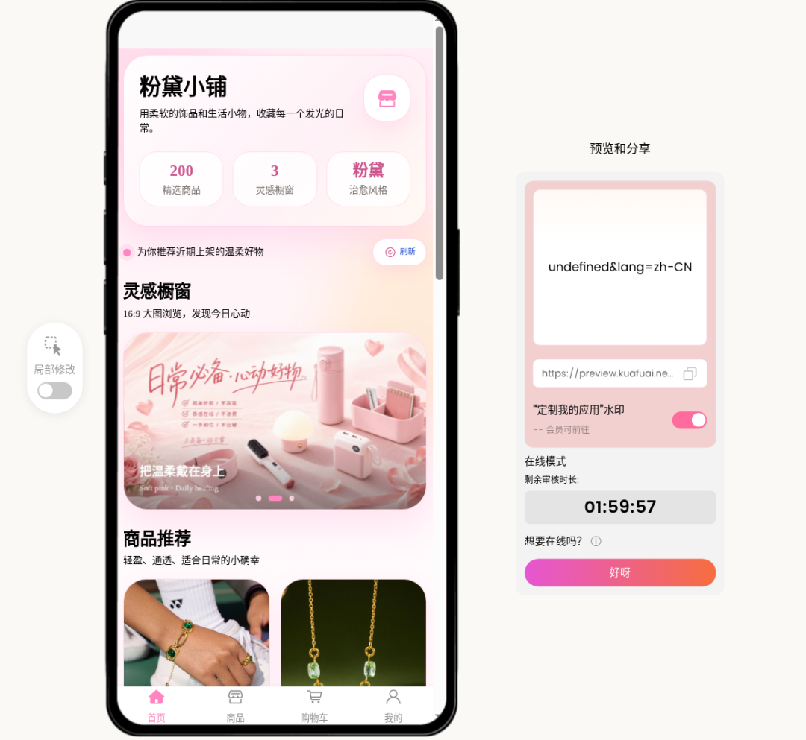
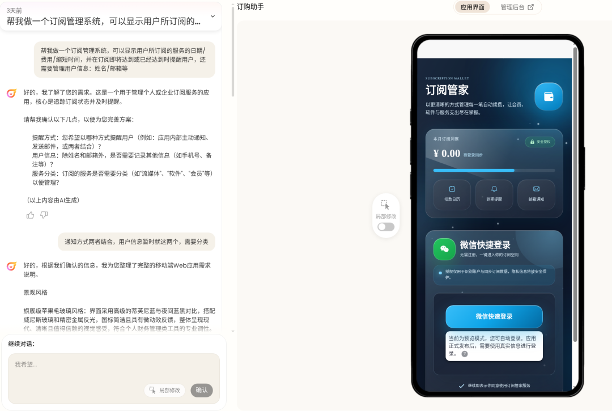
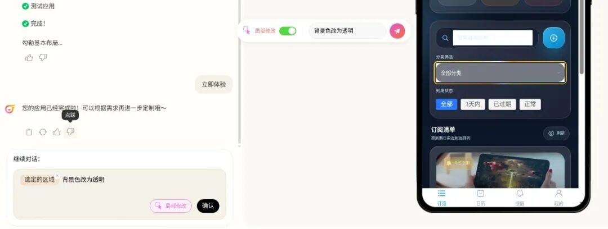
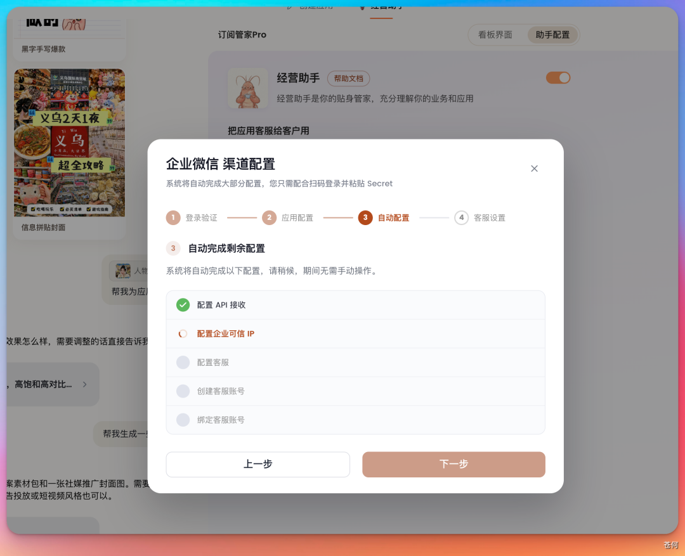
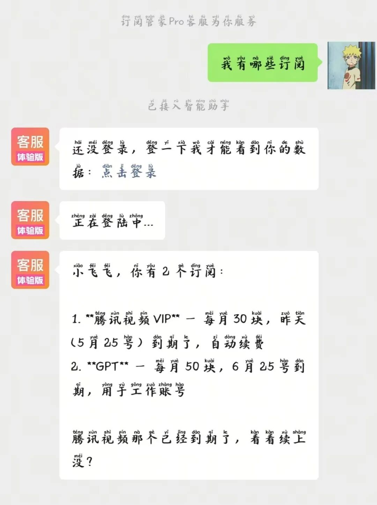
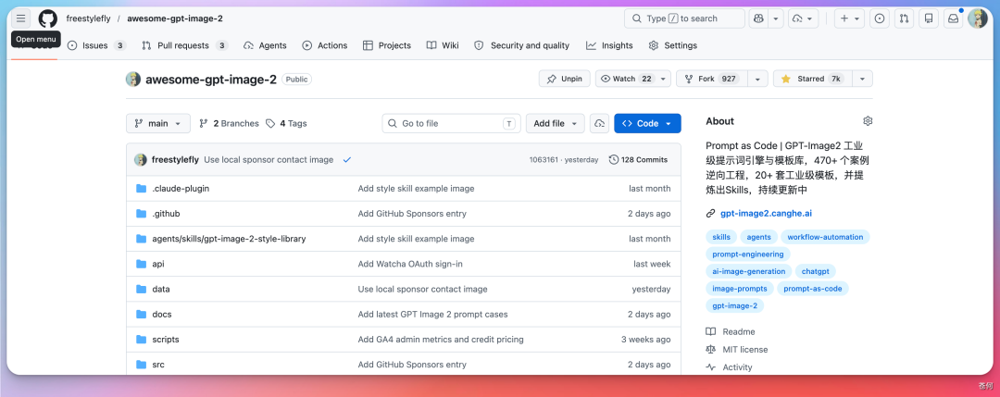
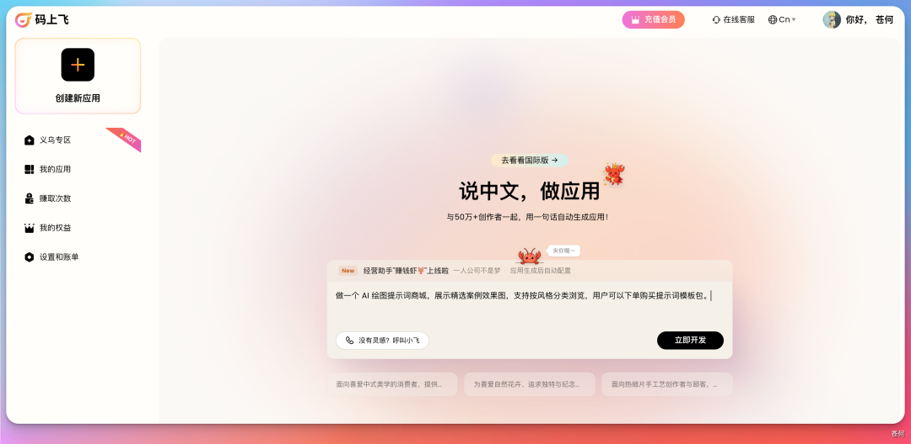
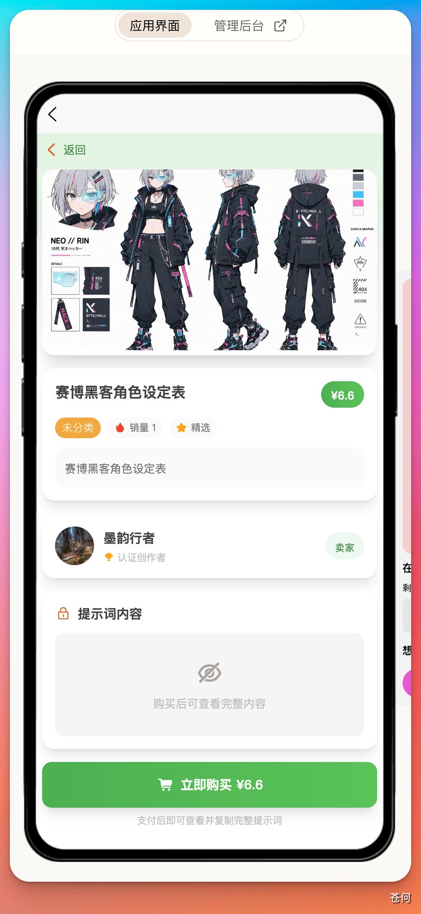
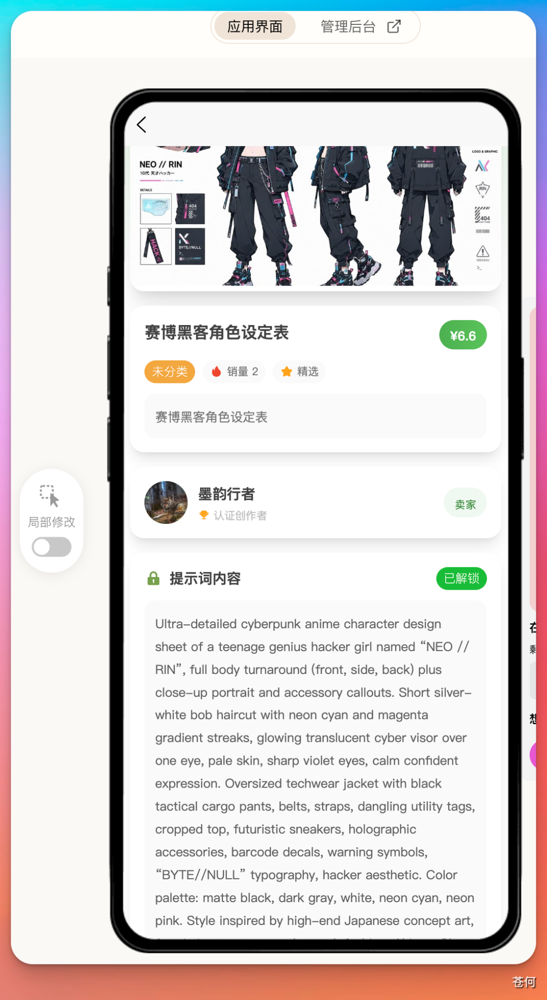
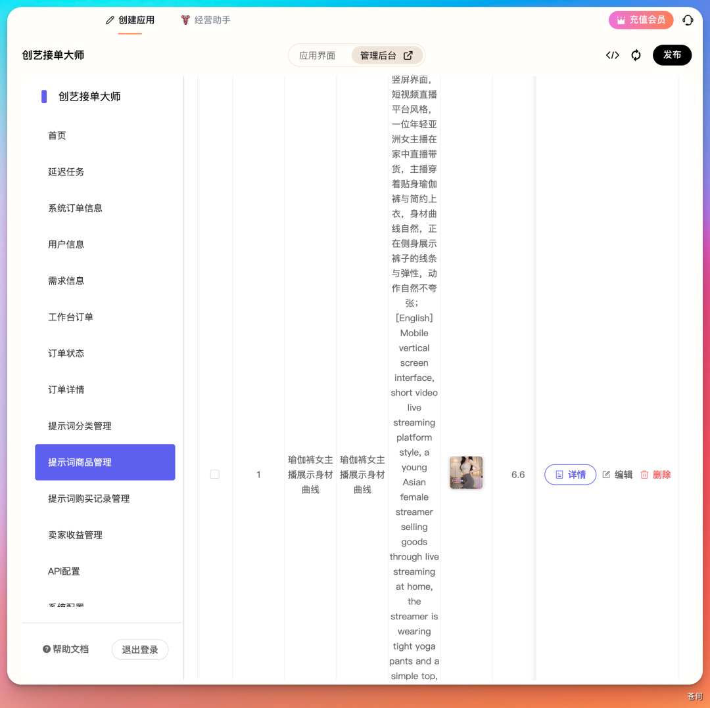

大家好，我是苍何。
最近我一直在想一个问题。
我做公众号写了 500 多篇原创，做了一个近 7000 star 的开源项目 awesome-gpt-image-2，还搞了一个桌面 AI Agent 工作台 WeSight。
按理说，产品有了，用户有了，我应该活得挺滋润吧？
说实话，没有。
因为做产品和做生意，压根就是两回事。
老粉都知道，我之前用 Agent 开了一家 Shopify 跨境网店，还被中国财经网报道了。

听着挺风光，但实际上呢？
光是把 Shopify 跑起来，我就折腾了快两周：配支付网关、对接物流、买域名绑定解析、装主题模板、搞 SEO 优化、研究税务合规......
代码层面的事，Agent 确实帮我搞定了大半。但代码之外的事，一个比一个头疼。
这就是我后来反复跟粉丝说的一句话：写代码只是做生意的第一步，甚至可能只占 5%。
剩下的 95% 是什么？推广获客、客户服务、订单管理、数据分析、内容运营。
这些事，没有任何一个 Vibe Coding 工具帮你解决。
Cursor 不会帮你写推广文案，Claude Code 不会帮你回复客户消息，Windsurf 更不会帮你分析今天有多少人下单。
工具们各管各的，你得自己当胶水，把所有东西粘起来。
累不累？累死了。
最近「义乌AI小店」突然火了，很多人在讨论用 AI 30 秒开一家自己的小店。

说实话，看到这个现象我一点都不意外。
因为它戳中了一个真实的需求：普通人想做点小生意，但传统路径太重了。
不过如果只是「30秒生成一个店铺页面」，那跟 Vibe Coding 做个前端 Demo 有什么区别？
真正让我来劲的，是背后那个平台「码上飞」在尝试做的事。
它直接把「数据、商品、服务、支付」全链路给你跑通了。
这跟 Shopify 那套思路完全不一样。Shopify 是给你一个空框架，剩下的你自己填。码上飞是直接给你一个能跑的生意系统。
我当时就想：这东西如果是真的，那我之前在 Shopify 上踩的那些坑，是不是都可以跳过了？
于是我决定认真测一测。
先从一个自己的真实痛点开始。
我订阅了一堆服务：GPT Plus、Claude Pro、腾讯视频VIP、网易云音乐VIP、GitHub Copilot......太多了，多到我根本记不清哪个什么时候到期，每个月到底花了多少钱。
我直接在码上飞的对话框里提需求：
帮我做一个订阅管理系统，可以显示用户所订阅的服务的日期/费用/到期时间，并在订阅即将到期时提醒用户，还需要管理用户信息：姓名/邮箱等

几分钟后，一个完整的订阅管家就出来了。带后台、带数据库、带用户管理，是一个能直接跑的完整系统。
细节不满意还能局部修改，选中页面上的元素直接说「把背景色改为透明」，秒改。

但到这里，大多数 Vibe Coding 产品也能做到。接下来才是真正拉开差距的地方。
店开好了，然后呢？
如果是以前，我得自己打开 Canva 做个海报，再打开 GPT 写段推广文案，再想想发到哪个平台。
但码上飞给每个应用都配了一个经营助手。
我先让它帮我生成应用封面。
接着让它帮我生成推广素材。
好家伙，海报、推广文案、甚至短视频脚本，一次性全给你出好了。
说实话，质量谈不上惊艳，但「够用」这件事本身就已经很了不起了。
因为对一个一人公司来说，你不需要 4A 级别的创意，你需要的是「今天就能发出去」的素材。省下来的时间和精力，才是真金白银。
经营助手搞定了推广，那用户来了谁接待？
可以给小店配一个客服，只需要扫企微，简单配置一下就 OK。

经营助手的微信客服使用只需要让客户直接扫码咨询就好了。
然后用户在微信上问的问题，AI 先自动回答。搞不定的，再转人工。

讲真的，回答得还挺像那么回事的。至少比你在某些平台遇到的真人客服强。
这一步补上之后，整个链路就通了：产品生成 → 推广获客 → 客服承接。
真正让我好奇的是：码上飞能不能帮我做一门「生意」？
我的开源项目 awesome-gpt-image-2 做了快 500 个 AI 绘图案例，20 多套工业级模板，GitHub 上 7000 多个 star 了。

社区用得挺开心，但说实话，我一分钱没赚到。
很多独立开发者都有这个困境：手里有「货」，可能是一套模板、一个数据集、一份经验文档，但就是没精力把它变成一门生意。搞支付、搞页面、搞后台，折腾半天人就没劲了。
那能不能用码上飞，花几分钟给自己开个提示词小店？
说干就干，我直接提需求：做一个 AI 绘图提示词商城，展示精选案例效果图，支持按风格分类浏览，用户可以下单购买提示词模板包。

几分钟后，一个提示词小店就出来了。
电商产品图模板包、小红书封面模板包、IP角色设计模板包，分门别类摆好，用户点进去能看效果图，下单就能拿到完整提示词。

购买后就能看到完整提示词内容了：

这些提示词模板在后台都能配置，包括分类、价格、图片这些。

手机上也能直接指挥码上飞，实时看效果。
从一个开源项目到一个能卖货的小店，中间就隔了几分钟。
而且，这个是能直接上线，推广变现的产品。
从一个 7000 star 的开源项目，到一个能卖货、能推广、能接客的小店，全程就我一个人加一个码上飞。
走完这一轮体验，我把 Shopify 和码上飞放在一起对比了一下。它们代表了两种完全不同的做生意思路。
Shopify 的逻辑是「给你工具箱，你自己装修」。
你得自己买域名、自己配支付网关、自己对接物流、自己装主题、自己搞 SEO、自己买 Mailchimp 发邮件、自己接 Zendesk 做客服。每一块都有专业工具，但你得自己当项目经理，把十几个工具粘在一起。
码上飞的逻辑是「告诉我你想做什么生意，我帮你跑起来」。
一句话生成 App，自带后台和数据管理。推广素材？经营助手帮你生成。客户服务？AI 客服帮你接。数据、商品、服务、支付，全链路跑通。
前者是给专业人的专业工具，后者是给普通人的生意系统。
Shopify 适合有经验、有团队、有预算的创业者；码上飞适合想试试看、一个人、零基础的普通人。
而这个世界上，后者远比前者多得多。
说一个可能得罪人的观点：
现在 90% 的 Vibe Coding 产品，做出来的东西本质上都是「高级玩具」。
能跑，但不能用。好看，但不赚钱。
为什么？因为它们只解决了做生意的第一步：把东西做出来。
但做生意是三步：做出来、推出去、接得住。
缺任何一步，都是空转。
这就是 Vibe Coding 的天花板。它把第一步做到了极致，但第二步和第三步呢？不好意思，不归我管。
而码上飞在尝试的，正是把这三步打包成一个东西。
你可以叫它 Vibe Business，也可以叫它「AI 商业操作系统」。叫什么不重要，重要的是它在解决一个真实的问题：怎么让一个人把一整盘生意跑起来。
最后说说我对「一人公司」的理解。
以前我们喊 OPC，说实话就是在喊口号。
因为一个人怎么可能干完产品、推广、客服、运营？你三头六臂也忙不过来。
但现在我的看法变了。
一人公司的本质，是一个人指挥 AI 干所有的事。
前者是把自己累死，后者是学会做 AI 的管理者。这两件事本质上完全不同。
我做 awesome-gpt-image-2 这个开源项目的时候深有体会：写代码、整理案例、做网站这些事我都能搞定。但推广、社群运营、用户答疑，每一件都在消耗我的时间和精力。
如果这些事 AI 都能帮我扛一部分呢？
我不确定码上飞现在就是那个完美答案，但它确实是我见过的第一个认真在做「全链路」这件事的产品。
直接给你一个能住的房子，还带物业、带保安。
以前开源是情怀，独立开发是热爱。
但如果 AI 能帮你把情怀和热爱变成生意呢？
这才是 Vibe Business 真正让我兴奋的地方。
你觉得 Vibe Coding 和 Vibe Business 最大的区别是什么？ 欢迎在评论区聊聊，我们下期再见。